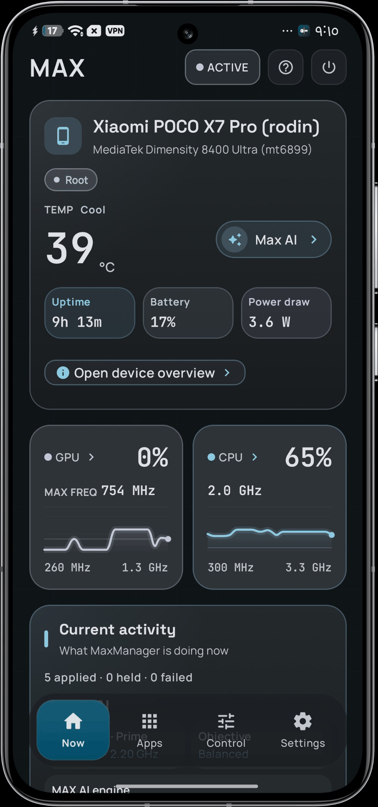
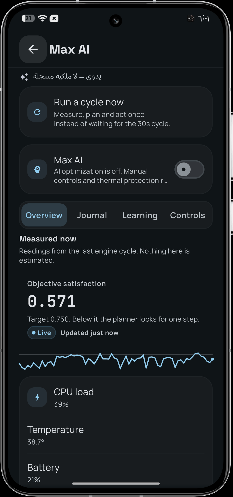
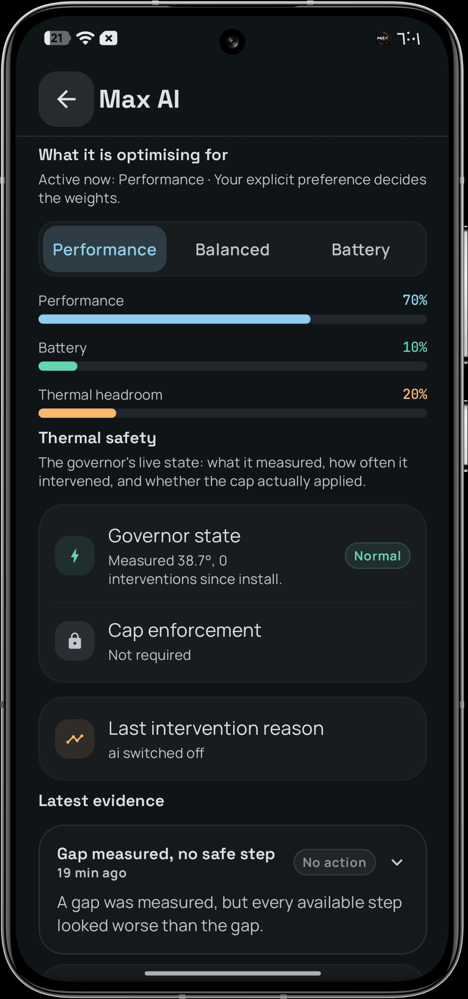
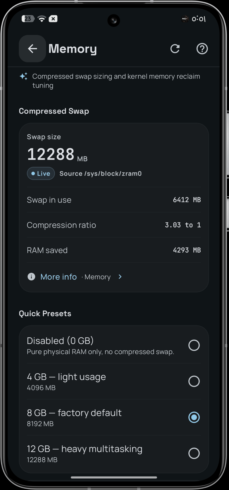
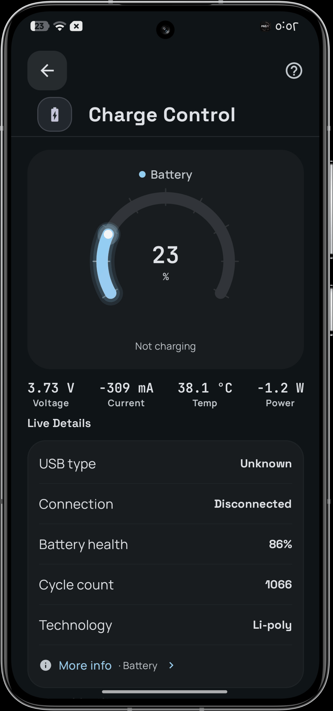
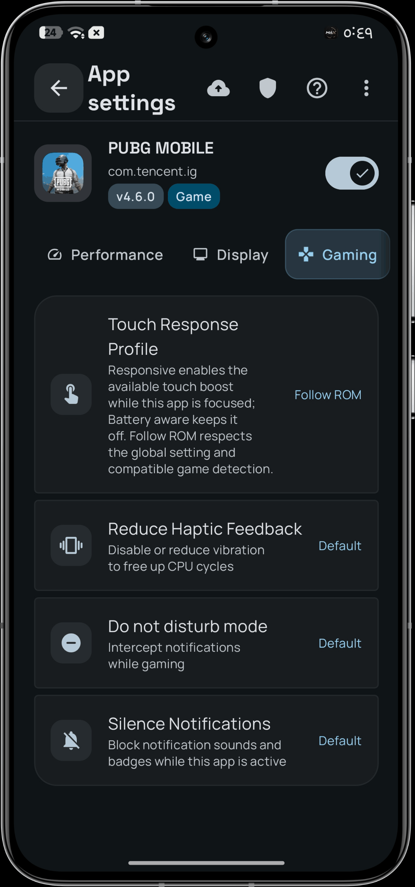
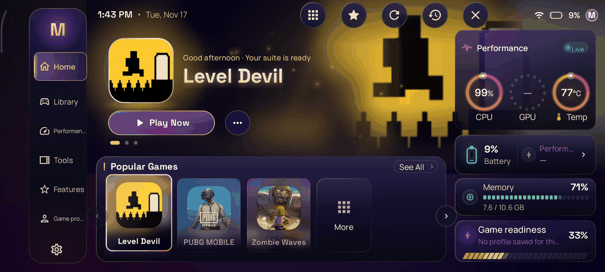
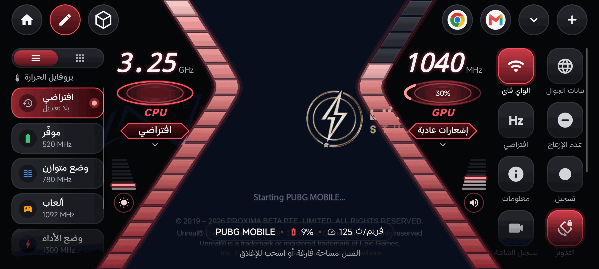
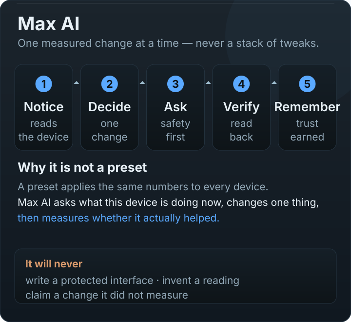

الغائب ليس معطَّلًا.
يُقرأ جهازك قبل أن يُرسم أي مقبض. وإذا أثبت سرد الواجهات أن الواجهة غير موجودة، فلا تُدرج — لا مفتاح باهت، ولا وعد لا يستطيع العتاد الوفاء به.
وحدة بلا لمس النظام · أندرويد ١٠ أو أحدث بجذر
يقرأ MaxManager الواجهات التي يكشفها نواتك فعلًا، ويكتب عبر مسار واحد مُدقّق، ثم يعيد قراءة كل تغيير من الجهاز. والمقبض الذي لا يعمل على هاتفك يغيب — لا يظهر مفتاحًا لا يفعل شيئًا.

الرئيسيةلقطة حقيقية · ٠٢/٧٢
ليست إعدادات. هي سبب أن تبدو شاشة خالية على هاتف لا يستطيع فعل الشيء — وسبب أن تبدو قيمة غير مفيدة بدلًا من أن تبدو واثقة.
يُقرأ جهازك قبل أن يُرسم أي مقبض. وإذا أثبت سرد الواجهات أن الواجهة غير موجودة، فلا تُدرج — لا مفتاح باهت، ولا وعد لا يستطيع العتاد الوفاء به.
كل تغيير يمرّ عبر محكّم واحد، ثم يُقرأ من الجهاز مرة أخرى. والقيمة التي لم تستقرّ تُعرض مع محاولة رجوع — ولا تُحتسب نجاحًا.
الرقم الذي لا يستطيع التطبيق قياسه يُعرض status_unknown أو شرطة. ولا يُملأ الفراغ بصفر مقنع.
Max AI و Max Atlas وسياسة كل تطبيق تبقى مطفأة حتى تشغّلها أنت، وطبقة السلامة تحتفظ بالأولوية المطلقة في مسار الكتابة.
كل إطار أدناه لقطة حقيقية من جهاز: ١١٦٢ × ٢٤٨٠، واختيار واحد لشريط الحالة، وسمة داكنة في كل الإطارات. افتح أي إطار للصورة الكاملة.

٠٣Max AI
٠٤خطة Max AI ٠٥التحكّم الحيّ
٠٥التحكّم الحيّ
 ٥١مجال المعالج
٥١مجال المعالج
 ٥٢مجال الذاكرة
٥٢مجال الذاكرة
 ٥٤الحرارة
٥٤الحرارة

٢٠مدير ZRAM
٢٢الشحن ٢٧لكل تطبيق
٢٧لكل تطبيق

٢٩لكل تطبيق · الألعاب ٠١البداية
٠١البداية

٧٠لوبي الألعاب
٧٢اللوحة الجانبيةالقطع لا تتداخل. واحدة تقرّر ما هو ممكن هنا، وواحدة هي الوحيدة المسموح لها بالكتابة، وواحدة تقرّر ما ينبغي تغييره — وطبقة سلامة تعلوها جميعًا.

أي واجهات موجودة، وما أسماؤها، وبأي وحدة تتكلّم، وهل يمكن الكتابة فيها — وما استقرّ فعلًا في المرة الماضية.
محكّم واحد، ودفتر ملكية واحد، وقراءة مرتجعة، ورجوع عندما لا تثبت القيمة، وحرس انحراف يعيد النظر لاحقًا.
تغيير واحد مقيس في كل مرة، مختار من المفردات التي وجدها Atlas فعلًا على هاتفك. ومطفأ حتى تشغّله أنت.
الملكية مكتوبة بجوار كل قيمة. ترى هل ضبط المقبض أنت، أم نمط تطبيق، أم الوحدة، أم بقي على افتراضيّ النواة — والملكية اليدوية تُسترجع في أي لحظة.
لكل مجال مجاله الخاص. والسطر تحت كل اسم هو وصف التطبيق نفسه للمجال، مقتبسًا من الواجهة.
الأنوية والمحافظ وتعزيز الشركة وتفضيلات النواة. وكل عنقود يُقرأ من المنصّة لا يُخمَّن.
ترددات الرسوميات ومعاملات الشركة الخاصة بها، مع حدود يدوية ومسار تعزيز الشركة.
الضغط وسلوك مدير الذاكرة و swappiness. والمحرّك يقرأ ضغط التوقّف في الذاكرة، لا نسبة الامتلاء.
معدّل التحديث واللون ومقاس اللوحة، مع شاشة دقّة مخصّصة ولوحة ألوان.
اللمس وإيقاع الإطارات وزمن الجدولة — ما يسمّيه الناس «استجابة اللمس»، مسمّى بما يفعله.
الحرارة والتقييد ومعاملاتها. ونقاط الرحلة لا تُكتب أبدًا، على أي جهاز.
الشحن والتجاوز والخمول وصحّة البطارية، مع سقف شحن و Doze عدواني.
أعد تشغيل تجميع ART بمرشّح تختاره، وأعد ضبط الحالة المجمّعة، واقرأ صحّة التخزين.
تحكّم ازدحام TCP و fast-open و SACK و ECN، وإعادة استعمال المقابس، ومعاملات مجدول الإدخال/الإخراج، وحالة الوصلة.
أجهزة الإخراج والمسارات والتأثيرات المعلنة. للقراءة فقط بالتصميم — والجهاز الذي لا يعلن تأثيرات يقول ذلك.
وما لا يعرضه جهازك في أحد هذه المجالات لا يُدرج ببساطة. لا مفتاح ميت يُشرح. اقرأ قائمة القدرات الكاملة.
هاتفان من الطراز نفسه قد يعرضان واجهات مختلفة. ونواتان قد تسمّيان الواجهة نفسها بوحدتين مختلفتين — وتسمحان بكتابة واحدة دون الأخرى. يسأل Atlas كل واجهة سؤالًا، ويتذكّر الجواب.

SUPPORTEDمسار مُراجَع موجود، وكتابة تحقّقت على هذا الجهاز.WRITABLEالمسار مؤهّل الآن؛ والنجاح لم يُثبت هنا بعد.READ_ONLYالجهاز يجيب القراءة؛ ولا مسار كتابة مؤهّل.NEEDS_ADAPTERالميزة ظاهرة؛ وهذا البناء لا يملك طريقة مُثبتة لقيادتها.UNAVAILABLEالغياب أُثبت بسرد لا يحمل الاسم.NEVER_TOUCHقاعدة سلامة مُراجَعة تمنع الكتابة في هذه الواجهة — دائمًا.UNKNOWNلا شيء قيس، أو لم يجب شيء ولم يُثبت الغياب.الغياب يجب أن يُثبت. القراءة الفاشلة ليست غيابًا: السرد الناجح وحده الذي يخلو من الاسم يُثبت أنه ليس هناك. وما عداه يبقى UNKNOWN، لأن القراءة المحجوبة والميزة غير المدعومة تبدوان متطابقتين من الخارج.
ليس روبوت محادثة، وليس جدول قيم سحرية. حلقة تعمل على المقابض التي وجدها Atlas على هاتفك: اختر هدفًا، ونفّذ أصغر تغيير قد يسدّ الفرق، ثم افحص السلامة، ونفّذ عبر المسار المعتاد، وقس ما حدث بعد ذلك.

التحكّم اليدوي هو الحالة الافتراضية. وحتى عند تشغيل المحرّك، تظلّ طبقة السلامة أعلى منه — بما في ذلك والمحرّك مطفأ. وحين تكون لعبة لها نمطها في المقدّمة، يتنحّى Max AI ويكتفي بمراقبة السلامة.
سياسة الحرارة من الشركة تُقرأ ولا تُتجاوَز. والسقف الذي تُبقيه البرمجية الثابتة تحت الطلب يُعرض «مقيَّدًا» — لا «مرفوعًا».
افتح التطبيقات، واختر حزمة، وأعطها معاملتها الخاصة. وكل تطبيق يعرض حالته الفعلية بكلمات صريحة: تحكّم كل تطبيق مطفأ · يستعمل النمط العام · تجاوز التطبيق فعّال.
نمط الأداء · معدّل التحديث · دقّة العرض · سقف الحرارة · محافظ المعالج والرسوميات — فقط التي يعلنها نواتك، وفقط المحافظ التي تدعمها سياسات المعالج كلها · قفل أولوية المقدّمة · تعزيز أولوية الإدخال/الإخراج · تصغير دقّة لكل تطبيق · إعادة ضبط للتطبيق.
النمط مجموعة سلوك مسمّاة تستطيع تطبيقها وضبطها وحفظها ومشاركتها. وعند التصدير تحمل كل قيمة مصدرها: افتراضيّ مشحون، أو قيمة غيّرتها أنت، أو قياس يدّعيه من صدّر الملف. وعند الاستيراد يقول التطبيق بالضبط ما قبله وما رفضه.
والقيمة المقيسة على شريحة أخرى تقول ذلك. وهي ليست قياسًا على شريحتك. والأنماط تُفتح أيضًا من الإعدادات السريعة، فيتغيّر النمط دون فتح التطبيق.
القراءة والقياس والتشخيص شاشات من الدرجة الأولى، لا قائمة تصحيح أُلحقت لاحقًا. ولا شيء هنا يتّصل بالخارج؛ تقرير الدعم يُبنى محليًّا ولا يغادر إلا إذا سلّمته أنت.
الصورة الحيّة: القراءات الحالية، وما يُسمح للأتمتة بفعله الآن ولماذا، وما ستفعله بعد ذلك، وهل يمكن الرجوع عنه.
قراءة قابلة للسحب لمعدّل الإطارات وحمل المعالج والذاكرة فوق أي لعبة — حتى ثلاثة مراقبات مستقلة، لكل واحد حقوله وموضعه.
سجلّ حيّ مع تصفية وبحث، وتقرير قابل للمشاركة مكتوب بداخله معجم حقوله.
حمل المعالج والذاكرة لكل عملية، وإيقاف قسريّ، و SIGKILL، وطبقة عائمة حين تحتاجها فوق شيء آخر.
مركز تشخيص حيّ، وصحّة المسار لكل مقبض، ومخطّط جهاز قابل للتكرار، وجواب صادق لسؤال «لماذا لم يعمل؟» في إعداد تطبيق.
فحوص عتاد تفاعلية على الجهاز نفسه — ألوان الشاشة، واللمس المتعدّد، والمفاتيح، والاهتزاز، وتوجيه الصوت، ومستوى الميكروفون، والحسّاسات، وما تعلنه اللوحة عن نفسها.
الواجهة آلة قياس. وقواعدها مكتوبة قيمة بقيمة في المستودع، وبوابة تُسقط البناء إذا اختلفت الوثيقة والكود.
اللون المميّز يتبع سمتك أنت، فيأخذ المنتج شكل الهاتف الذي يعيش عليه. أما الإيجابي والتحذير والحرج فثابتة ومقيسة التباين، لأن تنبيهًا حراريًّا يبدو زينةً عطبٌ في الصدق.
الميغاهرتز والنسب والحرارة وعدد الأنوية لا تتحرّك حين تتغيّر. والقيمة التي لا يملكها التطبيق شرطة — لا صفر بوحدة بعده.
الحركة موجودة لتشرح تغييرًا، وما يطول عن ذلك زينة. وتفضيل تقليل الحركة محترم في هذه الصفحة وفي التطبيق.
فاتح وداكن، ولون مفتاح قابل للتغيير وشاشة لوحة مخصّصة. و٨٤ لغة، والاتجاه من اليمين مفروض ببوابة لا بأمل. اقرأ لغة التصميم.
يشحن MaxManager كوحدة: لا شيء في /system يُعدَّل نهائيًّا، وإزالة الوحدة تعيد كل شيء.
نزّل MaxManager-<version>.zip من آخر تشغيل ناجح أو من إصدار. ولا تفليش MaxManager-developer-bundle.zip — ذلك حزمة معدّلي الرومات.
اختر التثبيت من التخزين ثم ملفّ الوحدة. وKernelSU وKernelSU Next مدعومان، والمنصّب يتحقّق من وصول الخدمة لمعمارية جهازك قبل أن يعلن النجاح.
اقبل طلب المشرف الذي يعرضه مدير الجذر حين يطلبه MaxManager. وبدونه لا يستطيع مسار التحكّم الكتابة؛ ومع Shizuku وحده تعمل عدة أدوات قراءة وكتابة.
يشرح الإعداد ما يعرضه جهازك قبل أن تلمس شيئًا. التحكّم اليدوي هو الافتراضي، ولا محرّك يبدأ من تلقاء نفسه.
| المتطلّب | القيمة |
|---|---|
| أندرويد | ١٠ أو أحدث (API 29)، ويُبنى على API 37 |
| الجذر | Magisk · KernelSU · KernelSU Next |
| المعمارية | arm64-v8a · armeabi-v7a |
| طبقة ثانية | Shizuku حيث يمكن أن تساعد — وليست بديلًا عن الوحدة |
| الشرائح | استراتيجيات مخصّصة لـ Snapdragon · MediaTek · Exynos · Tensor · Unisoc؛ وما عداها بالاكتشاف |
خذ نسخة احتياطية من صورة الإقلاع قبل التفليش، كما في أي وحدة جذر. الجذر قرارك ومسؤوليتك. وإذا فشلت الوحدة في بلوغ إقلاع مستقر مرتين متتاليتين، تعطّل نفسها وتقول ذلك في وصفها.
ثلاثة وثلاثون حكمًا تعمل قبل المُصرّف: ستة عشر تأكيدًا، وسبعة عشر أداة تقيس نفسها. والأداة التي لا تستطيع الفشل لا تُثبت شيئًا، فكل واحدة تُكسَر عمدًا وعليها أن تسمّي القاعدة التي كان يجب أن تمسكها.
| البوابة | ما ترفض تمريره |
|---|---|
kt_balance | أقواس غير متوازنة، أو نصوص أو تعليقات غير مغلقة، أو XML مشوّه |
code_health | مخالفات نظافة، أو دَين فوق سقفه المعلن، أو أصول غير معلنة |
i18n_coverage | محدّدات تنسيق خاطئة، أو مفاتيح مكرّرة، أو انزياح المجلّدات والمنتقي و locales_config |
resource_compile | موارد غير صالحة، يحكمها aapt2 الحقيقي — لا نظير يشبهه |
rtl_guard | حشو اتجاهيّ وأيقونات لا تنعكس |
license_audit | كود GPL يظهر في أي مكان في مسار الإصدار |
source_manifest | انحراف الشجرة عن بصمة ملفاتها المعلنة |
readme_assets | أصول وروابط مكسورة أو غير آمنة في هذه الوثائق |
screenshot_gallery | معرض انزاح عن المجلّد الذي يُولَّد منه |
| غير مُتحقَّق في هذا المستودع | لماذا |
|---|---|
| السلوك الفعلي للعتاد | الوحدات وجداول OPP تختلف بحسب الشركة؛ واستقرار الكتابة يحتاج الجهاز نفسه |
| صحّة سياسة SELinux | لا شجرة AOSP في هذه البيئة لتشغيل neverallow عليها |
| سلوك الإقلاع وحارس الحلقة | يحتاج جهازًا يقلع؛ وعدّاد المنصّب نفسه هو الدليل |
| الإخراج البصري: RTL والحركة والسمة | يحتاج مُصيِّرًا وشاشة — واللقطات هي الدليل |
| مخرج إصدار موقّع | سرّ التوقيع غائب بالتصميم؛ ويحقّقه تشغيل CI مع الـkeystore |
البناء الأخضر يعني أنه يترجم والاختبارات تمرّ. ولا يعني أن كتابة تستقرّ على عتادك. تلك الجملة قاعدة في هذا المشروع، لا تحوّط — verification.md يسرد ما أُثبت، وما يعمل بلا جهاز، وما يحتاج هاتفًا.
النسخة القصيرة من آخر إصدار. والتاريخ الكامل في ملفّ واحد في جذر المستودع.
صفحة قابلة للتمرير وتصميم أبسط؛ وأنماط جاهزة في شاشة الألوان؛ وخيارات لإطفاء إشعارات النمط المستمر.
تصغير دقّة لكل تطبيق في الألعاب، وخيارات عامة للمُصيِّر، ودعم إعادة التشغيل الناعم المحاكاة في KernelSU.
أُزيلت مجموعة كبيرة من إعدادات التحسين القديمة، ومنها إعدادات معدّل التحديث في الشاشات العامة ولكل تطبيق، مع تعديل ما بقي.
الإصدارات السابقة: 5.1 وسّع الترجمة من ١٧ إلى ٨٤ لغة؛ و5.0.4 جعل الخدمة مدفوعة بالأحداث وأنزل الحدّ الأدنى إلى أندرويد ١٠؛ و5.0 أعاد بناء الواجهة وأضاف الإعداد والنسخ الاحتياطي وبلاطات الإعدادات السريعة. اقرأ كل إصدار
نعم، لمستوى التحكّم الكامل. MaxManager وحدة بلا لمس النظام لـMagisk أو KernelSU: يصل التطبيق إلى النواة عبر جسر جذر واحد مُدقّق، وتعمل الخدمات كعمليات في جانب النظام. ويُكتشف Shizuku أيضًا (بمستوى ADB، بلا جذر) ويفتح عدة أدوات قراءة وكتابة، لكنه ليس بديلًا عن الوحدة.
غالبًا — لكنك لست مضطرًّا للتخمين. يحلّ MaxManager القدرات لكل واجهة قبل أن يعرض شيئًا، فالمقبض الذي لا يعرضه جهازك لا يظهر أبدًا مفتاحًا لا يفعل شيئًا. افتحه واقرأ الخريطة: ذلك الجواب عن هاتفك، وهو أفضل من أي قائمة.
لا. التحكّم اليدوي هو الحالة الافتراضية، وMax AI وMax Atlas ومحرّكات كل تطبيق أشياء تشغّلها أنت. وحين تشغّلها، تظلّ طبقة السلامة ذات الأولوية المطلقة.
status_unknown بدل 0؟لأن 0 ادّعاء. والمشروع يمنع القياس المُصنَّع: حين لا يعرف، يقول ذلك بدل أن يعرض صفرًا يبدو معقولًا. والحقل الذي يبدو فارغًا أصدق من رقم خاطئ.
ثلاث طبقات مستقلة. تُقرأ القيم مرة أخرى بعد كتابتها، ويُعرض الاختلاف مع محاولة رجوع. ويعيد حرس الانحراف الفحص لاحقًا، لأن الإعداد قد يرتدّ صامتًا. ويعطّل المنصّب نفسه إذا فشلت الوحدة في بلوغ إقلاع مستقر مرتين متتاليتين.
لا قياس عن بُعد، ولا تحليلات، ولا رفع صامت. تقرير التشخيص يُبنى محليًّا ويُصغَّر، ولا يغادر جهازك إلا إذا سلّمت الملفّ بنفسك. وتقرير الدعم ليس لقطة شاشة.
المستودع العام ليس مشروعًا مفتوح المصدر. MaxManager برنامج مغلق المصدر؛ والمستودع صفحة منتجه وعدّة دمج الرومات وسجلّه الهندسي. ولا حقّ يُمنح لاستعمال أو نسخ أو تعديل أو توزيع دون إذن كتابيّ مسبق من صاحب الحقّ. وتحتفظ المكوّنات الخارجية برخصها، مسرودة فردًا فردًا في الإشعارات.
هذه الصفحة هي الجولة. وهذه هي الأجوبة التي تعود إليها بعدها.
أرسل الجهاز والروم ومدير الجذر وما عرضه التطبيق. وإن قال status_unknown فقلها — تلك حقيقة عن جهازك، لا خطأ منك.